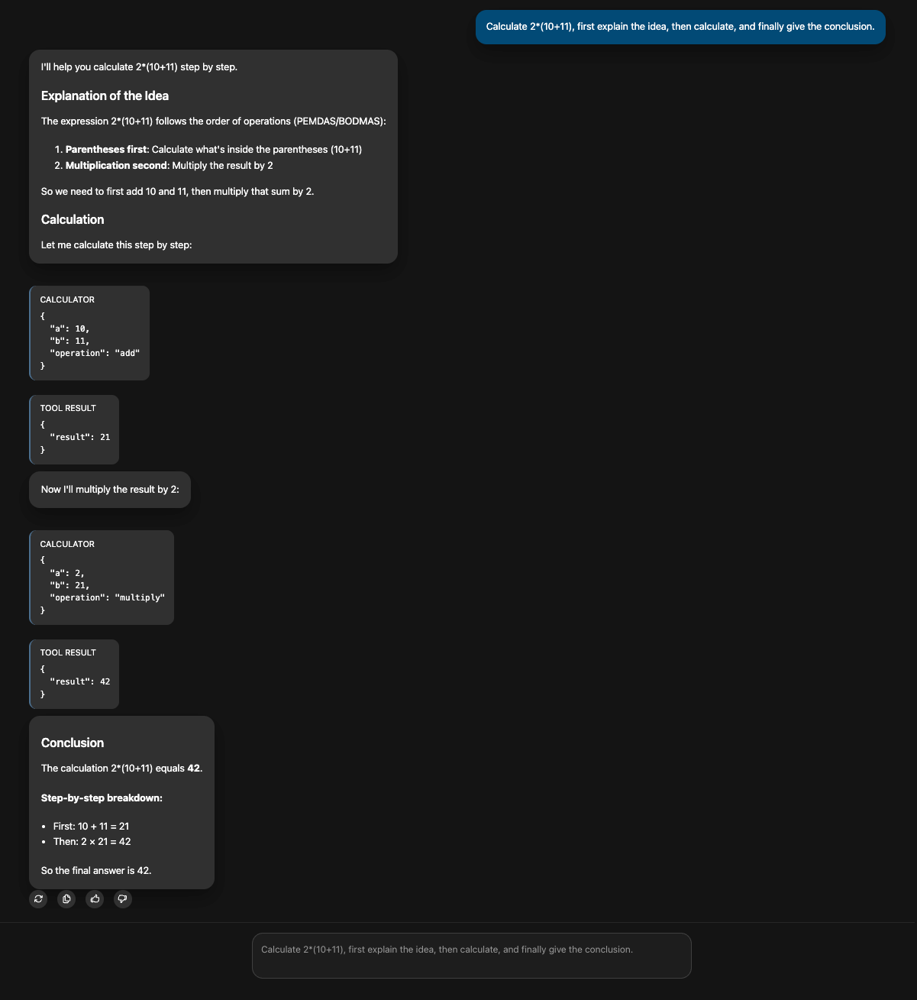

The AG-UI (Agent-User Interaction) protocol is maintained by the open-source AG-UI Protocol project. It enables agents built in different languages, frameworks, and execution environments to deliver their runtime outputs to user interfaces through a unified event stream. The protocol tolerates loosely matched payloads and supports transports such as SSE and WebSocket.
tRPC-Agent-Go ships with native AG-UI integration. It provides an SSE server implementation by default, while also allowing you to swap in a custom service.Service to use transports like WebSocket and to extend the event translation logic.
Getting Started
Assuming you already have an agent, you can expose it via the AG-UI protocol with just a few lines of code:
import("net/http""trpc.group/trpc-go/trpc-agent-go/runner""trpc.group/trpc-go/trpc-agent-go/server/agui")// Create the agent.agent:=newAgent()// Build the Runner that will execute the agent.runner:=runner.NewRunner(agent.Info().Name,agent)// Create the AG-UI server and mount it on an HTTP route.server,err:=agui.New(runner,agui.WithPath("/agui"))iferr!=nil{log.Fatalf("create agui server failed: %v",err)}// Start the HTTP listener.iferr:=http.ListenAndServe("127.0.0.1:8080",server.Handler());err!=nil{log.Fatalf("server stopped with error: %v",err)}
Note: If WithPath is not specified, the AG-UI server mounts at / by default.
For an in-depth guide to Runners, refer to the runner documentation.
On the client side you can pair the server with frameworks that understand the AG-UI protocol, such as CopilotKit. It provides React/Next.js components with built-in SSE subscriptions. The sample at examples/agui/client/copilotkit builds a web UI that communicates with the agent through AG-UI, as shown below.

Advanced Usage
Custom transport
The AG-UI specification does not enforce a transport. The framework uses SSE by default, but you can implement the service.Service interface to switch to WebSocket or any other transport:
translator.New converts internal events into the standard AG-UI events. To enrich the stream while keeping the default behaviour, implement translator.Translator and use the AG-UI Custom event type to carry extra data:
For example, when using React Planner, if you want to apply different custom events to different tags, you can achieve this by implementing a custom Translator, as shown in the image below.
By default, the AG-UI Runner does not append extra agent.RunOptions to the underlying runner.Run. Implement RunOptionResolver, inject it with aguirunner.WithRunOptionResolver, and translate client-provided configuration (for example, modelName or knowledgeFilter) from ForwardedProps.
RunOptionResolver executes for every incoming RunAgentInput. Its return value is forwarded to runner.Run in order. Returning an error surfaces a RunError to the client, while returning nil means no extra options are added.
Event Translation Callback
AG-UI provides an event translation callback mechanism, allowing custom logic to be inserted before and after the event translation process.
translator.BeforeTranslateCallback: Triggered before the internal event is translated into an AG-UI event. The return value convention:
Return (customEvent, nil): Use customEvent as the input event for translation.
Return (nil, nil): Retain the current event and continue with the subsequent callbacks. If all callbacks return nil, the original event will be used.
Return an error: Terminates the current execution, and the client will receive a RunError.
translator.AfterTranslateCallback: Triggered after the AG-UI event translation is completed and just before it is sent to the client. The return value convention:
Return (customEvent, nil): Use customEvent as the final event to be sent to the client.
Return (nil, nil): Retain the current event and continue with the subsequent callbacks. If all callbacks return nil, the original event will be sent.
Return an error: Terminates the current execution, and the client will receive a RunError.
import(aguievents"github.com/ag-ui-protocol/ag-ui/sdks/community/go/pkg/core/events""trpc.group/trpc-go/trpc-agent-go/event""trpc.group/trpc-go/trpc-agent-go/server/agui"aguirunner"trpc.group/trpc-go/trpc-agent-go/server/agui/runner""trpc.group/trpc-go/trpc-agent-go/server/agui/translator")callbacks:=translator.NewCallbacks().RegisterBeforeTranslate(func(ctxcontext.Context,event*event.Event)(*event.Event,error){// Logic to execute before event translationreturnnil,nil}).RegisterAfterTranslate(func(ctxcontext.Context,eventaguievents.Event)(aguievents.Event,error){// Logic to execute after event translationifmsg,ok:=event.(*aguievents.TextMessageContentEvent);ok{// Modify the message content in the eventreturnaguievents.NewTextMessageContentEvent(msg.MessageID,msg.Delta+" [via callback]"),nil}returnnil,nil})server,err:=agui.New(runner,agui.WithAGUIRunnerOptions(aguirunner.WithTranslateCallbacks(callbacks)))
Event translation callbacks can be used in various scenarios, such as:
Custom Event Handling: Modify event data or add additional business logic during the translation process.
Monitoring and Reporting: Insert monitoring and reporting logic before and after event translation. A full example of integrating with Langfuse observability platform can be found at examples/agui/server/langfuse.
RunAgentInput Hook
You can use WithRunAgentInputHook to mutate the AG-UI request before it reaches the runner. The following example reads other_content from ForwardedProps and appends it to the latest user message:
Returning nil keeps the original input object while preserving in-place edits.
Returning a custom *adapter.RunAgentInput replaces the original input; returning nil keeps it.
Returning an error aborts the request and the client receives a RunError event.
Message Snapshot
Message snapshots restore historical conversations when a page is first opened or a connection is re-established. The feature is controlled by agui.WithMessagesSnapshotEnabled(true) and is disabled by default. Once enabled, AG-UI exposes both the chat route and the snapshot route:
The chat route defaults to / and can be customised with agui.WithPath;
The snapshot route defaults to /history, can be customised with WithMessagesSnapshotPath, and returns the event flow RUN_STARTED → MESSAGES_SNAPSHOT → RUN_FINISHED.
When enabling message snapshots, configure the following options:
agui.WithMessagesSnapshotEnabled(true) enables the snapshot endpoint;
agui.WithMessagesSnapshotPath sets the custom snapshot route, defaulting to /history;
agui.WithAppName(name) specifies the application name;
agui.WithSessionService(service) injects the session.Service used to look up historical events;
aguirunner.WithUserIDResolver(resolver) customises how userID is resolved, defaulting to "user".
While serving a snapshot request, the framework parses threadId from the RunAgentInput as the SessionID, combines it with the custom UserIDResolver to obtain userID, and then builds a session.Key together with appName. It queries the session through session.Service, converts the stored events (Session.Events) into AG-UI messages, and wraps them in a MESSAGES_SNAPSHOT event alongside matching RUN_STARTED and RUN_FINISHED events.
import("trpc.group/trpc-go/trpc-agent-go/server/agui""trpc.group/trpc-go/trpc-agent-go/server/agui/adapter"aguirunner"trpc.group/trpc-go/trpc-agent-go/server/agui/runner""trpc.group/trpc-go/trpc-agent-go/session/inmemory")resolver:=func(ctxcontext.Context,input*adapter.RunAgentInput)(string,error){ifuser,ok:=input.ForwardedProps["userId"].(string);ok&&user!=""{returnuser,nil}return"anonymous",nil}sessionService:=inmemory.NewService(context.Background())server,err:=agui.New(runner,agui.WithPath("/chat"),// Custom chat route, defaults to "/"agui.WithAppName("demo-app"),// AppName used to build the session keyagui.WithSessionService(sessionService),// Session Service used to query sessionsagui.WithMessagesSnapshotEnabled(true),// Enable message snapshotsagui.WithMessagesSnapshotPath("/history"),// Snapshot route, defaults to "/history"agui.WithAGUIRunnerOptions(aguirunner.WithUserIDResolver(resolver),// Custom userID resolver),)iferr!=nil{log.Fatalf("create agui server failed: %v",err)}iferr:=http.ListenAndServe("127.0.0.1:8080",server.Handler());err!=nil{log.Fatalf("server stopped with error: %v",err)}
The format of AG-UI's MessagesSnapshot event can be found at messages.
Setting the BasePath for Routes
agui.WithBasePath sets the base route prefix for the AG-UI service. The default value is /, and it is used to mount the chat route and message snapshot route under a unified prefix, avoiding conflicts with existing services.
agui.WithPath and agui.WithMessagesSnapshotPath only define sub-routes under the base path. The framework will use url.JoinPath to concatenate them with the base path to form the final accessible routes.
server,err:=agui.New(runner,agui.WithBasePath("/agui"),// Set the AG-UI prefix routeagui.WithPath("/chat"),// Set the chat route, default is "/"agui.WithMessagesSnapshotEnabled(true),// Enable message snapshot featureagui.WithMessagesSnapshotPath("/history"),// Set the message snapshot route, default is "/history")iferr!=nil{log.Fatalf("create agui server failed: %v",err)}
In this case, the chat route will be /agui/chat, and the message snapshot route will be /agui/history.